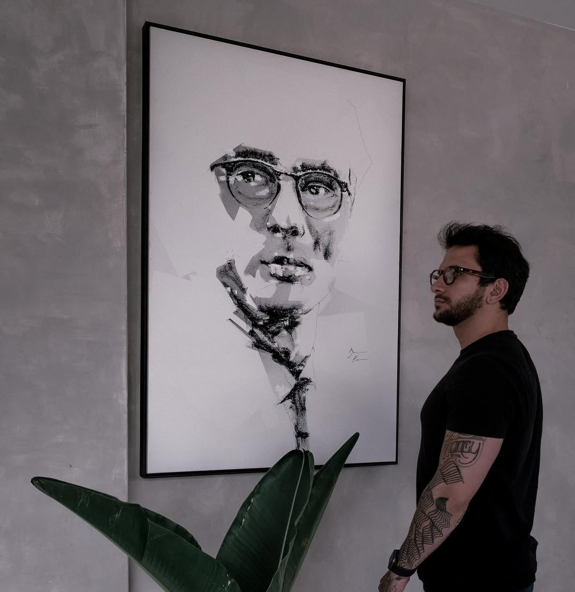

O Pensador (Motion)
VENDIDO
Mídia: Vídeo Digital, 45 Segundos | Ano: 2024
Edição: Coleção Privada, 1 de 3.
Uma exploração da introspecção através da animação da tinta. Este vídeo foi exibido na [Nome da Exposição]. Embora esta edição esteja vendida, aceitamos encomendas personalizadas.

Still do Vídeo Digital (Vista em Contexto).
Vídeo Bônus: Processo Criativo.